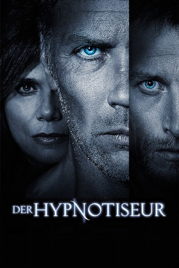
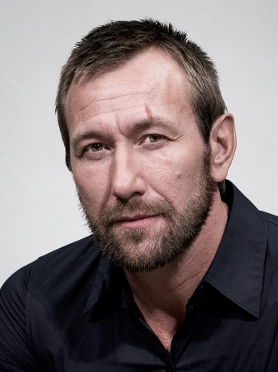

#7344 Der Hypnotiseur
 
 IMDB-Wertung: 5.6 / 10
IMDB-Wertung: 5.6 / 10  Metascore: 0
Metascore: 0 
Am Stadtrand von Stockholm wird ein toter, verstümmelter Familienvater aufgefunden. Der Kommissar Joona Linna, der in dem Fall ermitteln soll, macht sich auf den Weg zur Familie des Toten. Als er dort ankommt, muss er bestürzt feststellen, dass der Täter auch die restliche Familie bestialisch ermordet hat. Bis auf den verstörten Sohn sind alle tot. Bei den Ermittlungen stellt Linna schnell fest, dass die Familie noch eine weitere Tochter hatte, welche zur Tatzeit nicht zu Hause war. Der Kommissar will das Mädchen beschützen und muss es deshalb schnell ausfindig machen. Um den Aufenthaltsort der Vermissten herauszufinden, muss der vernehmungsunfähige Sohn jedoch anfangen zu sprechen. Dabei soll der Hypnotiseur Erik Maria Bark helfen. Die Hypnose verläuft erfolgreich und der Fall ist schnell aufgeklärt. Doch Bark löst durch seine erfolgreiche Arbeit einen weiteren grausigen Vorfall aus, der ihn und seine Frau Simone in Gefahr bringt.
Jahr: 2012
Dauer: 121 Minuten
FSK: 16
Land: Schweden Studio: Prokino FilmverleihTonspuren:
Untertitel: Deutsch,
Auflösung: 1080p (1920x800) Größe: 6594 MB
Genre: Thriller, Drama, Krimi
Regisseur: Lasse Hallström
Drehbuch: Paolo Vacirca
Soundtrack:
Darsteller:
- Tobias Zilliacus als Joona Linna
 Mikael Persbrandt als Erik Maria Bark
Mikael Persbrandt als Erik Maria Bark Lena Olin als Simone Bark
Lena Olin als Simone Bark Helena Af Sandeberg als Daniella
Helena Af Sandeberg als Daniella- Anna Azcárate als Lydia
- Jonatan Bökman als Josef
- Jan Waldekranz als Shulman
- Eva Melander als Magdalena
-  Robert Follin als Pappa Ek
- Oscar Pettersson als Benjamin
- Göran Thorell als Stensund
- Gustav Levin als Carlos
- Tomas Magnusson als Petter
- Ulf Eklund als Nålen
- Conny Vakare als Kut chefen
- Emma Mehoniç als Evelyn
- Mats Andersson als Äldre polis
- Simon Mezher als Civilpolis
- Claes Hartelius als Evert Braun
- Hedvig Lagerkvist als Sjuksköterska
- Annika Gardeskog als Mamma Ek
- Lea Heed als Lisa Ek
- Lars Hjelm als Vakthavande polis
- Peter Eklund als Kriminaltekniker
- Robert Laurén als Polis
- Andreas Emilsson als Polis
- Sara Burnett als Brunhårig sjuksköterska
- Johan Hallström als Erland , uncredited
Datei: X:\2012(G-M)\Hypnotiseur, Der (2012, FSK16, 1920x800).mkv seit 17.10.2017
Festplatte: HD 2012(A-M)
 Es gibt insgesamt 112 Filme in der Gruppe '2012(G-M)'
Es gibt insgesamt 112 Filme in der Gruppe '2012(G-M)'